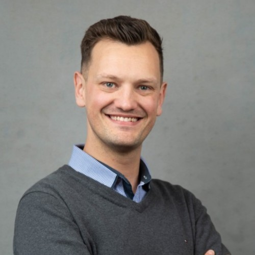

Michael Logan's Resume
OT / SCADA Technical Specialist

LinkedIn
Resume PDF
Contact
Summary
Highly motivated and detail-oriented engineer with over 4 years of experience in OT technology, specifically SCADA systems, and a proven track record of success in the transport industry. Possesses a Master of Engineering in Renewable Energy and a dual Bachelor of Mechanical Engineering and Bachelor of Commerce. Known for exceptional problem-solving skills and a strong ability to analyse complex data during time sensitive events. Seeking a challenging role in the renewable energy market where my expertise in data analysis and engineering can contribute to the development and implementation of sustainable energy solutions.
Professional Skills
- GE PowerOn Fusion, Linux (RHEL), VMWare Virtualization, AVEVA-PI (formerly OSI), MOSAIC
- McAfee enterprise applications; ePolicy Orchestrator, Agent, Solidore, Solidifier
- Various proprietary application builds, deployment and management
- Communication, analytics, problem solving, stakeholder engagement, teamwork
- Python (ML, DL & AI), SQL, Perl, HTML, XML, C
- Windows administration, networking across demilitarised domains
- SolidWorks (advanced), AutoCAD suite, Creo PTC Parametric
- Word, Excel (high proficiency), Visio, Project, PowerPoint, Access
Experience
CitiPower Powercor | OT/SCADA Technical Specialist
Nov ‘21 – Present
- System administration using VMware VSphere and Windows Server Domain Controllers
- Product feature customisation and monitoring using Python, PS, Wireshark and scripting
- Integration and deployment of various automation programs such as DERMS, FDIR and load flow analysis
- Successfully deployed a project of 70 machines to an OT production environment with a new SOE
- Manage and prioritise BAU incidents and minor enhancement projects across APAC region
- Mentoring and leading graduates during rotations with the team
- Efficiently diagnosed & resolved complex hardware, software, and network issues within OT environment
CitiPower Powercor | IT Graduate
Jan ‘20 – Oct ‘21
Providing power to over 1.2 mil homes across Victoria by operating a network of poles, wires and infrastructure that distribute electricity to and from our customers
- Created mechanisms for project benefit (non/financial) reporting and tracking through ETL processes
- Delivered business ready upgraded historian and web interface (OSI PI)
- Standardised naming conventions for network assets devices across GIS, OMS and DMS
- Significantly reduced down-time of field communication devices through preventative procedure
V. Orlandi | Sales and Logistics Manager
Jan ‘17 – Jun ‘17
Based in Italy with more than 20 years presence in the Australian market, V. Orlandi designs and manufactures heavy duty towing systems, with a product range designed and developed for local conditions including military and mining operations
- Forecast and maintained stock levels and lead times as products were imported internationally
- Aligned customer requirements with an appropriate solution from our product range
- Configured and implemented online CRM tool to meet company needs
LazyDayz | Engineer
Jun ‘16 – Jan ‘17
Melbourne based small business importing luxury motor homes and trailer systems from USA and Europe and converting to local standards to be sold into the Australian market
- Created SolidWorks models and AutoCAD drawings to enable local manufacture
- Optimisation of the design of car trailers to meet Australian specifications
- Fabricated CAD models of laser cut materials ensuring structural integrity, compliance and appropriate load pathing to Australian safety standards
Education
Various Online coding/ML/DL/AI courses 2020 – Present
AIM – Various corporate professional development courses 2020 – Present
M.Eng. (Renewable Energy) – Swinburne University 2018 – 2020
B.Eng (Mechanical) / B.Com (Management) – Swinburne University 2009 – 2016
- Awarded Rex Gotch Prize for final thesis project
- Volunteer tutor, mentor and o-host
Interests
My interests are ranging in a variety of several physical activities such as bouldering, hiking and bicycle riding to more niche activities like building mechanical keyboards, AI deployment and developing cocktails. I have recently renewed my interest in strategic board/card games and thoroughly enjoy the opportunity to challenge my logical and analytical thinking. Being passionate about renewable energy, in my leisure time I also appreciate extending my knowledge and understanding of companies and government bodies that are actively contributing to renewable energy on a governance and engineering level.